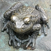

Lé crapaud
 Le Ménage ès Feuvres, St Ouën,
Le Ménage ès Feuvres, St Ouën,Moussieu l'Rédacteu,
Un vaîsîn m'disait l'aut' jour tch'il avait veu deux bieaux crapauds dans un gardîn du vaîsinné. Ouaithe qué nouot' fanmeux crapaud Jèrriais n'est pon èrnommé pour sa bieauté, pour mé il est iun d's annimaux qué j'voudrais r'vaie dans touos nouos gardîns en grand nombre.
"Et pourtchi?" ou m'dites. Eh bein, à c'menchi, il est utile dans l'gardîn. Il a bouan appétit et i' mange hardi d'însectes tchi niêsent ès flieurs et lédgeunmes. Et j'ai tréjous ieu du respé et d'la sympathie pour chu bouân crapaud tch'est assez èrnommé pour êt' appelé un Jèrriais, un honneu tchi n'appartcheint qu'à mains d'la maintchi d's habitants d l'Île à ch't heu. Et dans les Îles il a l'honneu d'êt' unniquement natif dé Jèrri dépis tch'i' n'existe pon dans l's aut's. Et auve toutes ses qualités. il est absolûment innoffensif. Y'en a tchi craient tch'il êclyiche du v'lin, mais ch'n'est pon vrai.
Quand j'tais mousse, y'en avait tchiquefais dans les pits. J'pense bein tch'i' tchiyaient d'dans par accident. Ma m'mèe faîsait sèrvi l'gîndas du nouotre pour dévaler et ramonter l'sieau, et j'l'ai veue trouver deux crapauds sus l'haut d'l'ieau du sieau. Ou m'ttait sa main souos l'crapaud et l'env'yait dans l'gardîn. Appathemment, v'là tchi n'faîsait autchun ma à l'ieau.
Quand il' 'taient nombreux dans les campangnes il' 'taient tchiquefais assujettis à la cruauté d'îndividus tch'éthaient deu saver mus. En r'vénant d'l'êcole, tréjous à pid dans chu temps-là, nou-s en trouvait tchiquefais l'long du fossé et les garçons les happaient à la main pour l's env'yer sus les filles, tch'en avaient peux. Y'en avait parmi les rangs d'patates dans les clios, et en les dêfouissant, tréjous à la frouque dans chu temps-là, i' lus trouvaient souvent pitchis par la frouque par accident. Tchitch'uns des cheins tch'avaient ieu la chance d'êcapper les dés d'la frouque 'taient fliantchis sus les femmes tch'étaient à êtèrrer et à gliainer. Il' en avaient peux et faîsaient des cris! Les crapauds n'pèrdaient pon d'temps à lus êcapper parmi les fielles dé patates dêfouies.
Eune aut' cruauté 'tait d'alleunmer eune cigarette et d'la fouôrrer dans la bouoche du pouôrre crapaud pour l'enflier. Iun d'mes anmîns, un moussieu distîndgi à ch't heu, passait dans eune cèrtaine route où'est tch'i' y'avait plusieurs individus tch'allaient justément l'faithe. I' prînt san couothage à deux mains et lus halit l'crapaud des mains et l'mînt en seûtheté sus l'fossé et lus dît qué l'preunmyi tch'éthait l'malheur dé l'touchi éthait affaithe à li. Heutheusement pour li i' laissîdrent lé pouôrre crapaud trantchil'ye, car, ouaithe tch'i' fûsse un fort homme, mén anmîn éthait ieu d'la peine à en battre eune démié douzaine en même temps s'il' avaient continnué à tortuther l'crapaud.
Où'est tch'est l'temps tch'i' y'en avait tant dans l'Ile tch'il 'tait dév'nu partie du vocabulaithe dé nouot' belle vielle langue? Y'avait même un jeu tch'était nommé "Lé Jeu du Crapaud", mais j'n'ai janmais connu l'jeu mé-même.
Lé crapaud a eune duthe pé tch'est manniéthe dé gravelée et i' n'y' a autchun abri d'ssus pour însecte ou aut' forme d'vie. Ch'est en tchi quand un homme est absolûment sans l'sou, nou dit tch'il a autant d'sou comme un crapaud a d'puches. Et pour eune janne fille tch'est tard à rentrer au sé, nou dit qu'oulle 'tait d'hors jusqu' ès p'tits crapauds (ch'est à dithe, jusqu'à l'heuthe, tard au sé, quand les p'tits crapauds lus dêhallent). Nou peut dithe, étout, qu'un p'tit crapaud est appelé un crapaûdîn. Quand j'tais mousse, j'ouïyais les méthes appeler lus êfants des chièrs pétits crapaûdîns. Et chu nom-là 'tait donné ès hommes tchi n'taient qué hauts comme un pot d'cidre, et v'là tchi les mârrissait tréjous.
Quand un tas d'crapauds lus trouvaient dans l'mème clios ou aut' pliaiche, nou disait qué ch'tait eune vraie crapaûdgiéthe Et comme i' dêhalaient sustout la niet, quand nou sortait et qu' nou n'viyait pon la main d'vant sé et tc'h'i' fallait trouver san c'mîn partout à tâtons, nou disait "J'aime bein eune bouanne veue, mé; pas d'crapaûd'die pour mé!" Et quand un p'tit êfant c'menchait à gabather sus ses pids et ses mains comme un crapaud, nou disait "Lé p'tchiot c'menche à crapaûder l'tou d'l'appartément." Et crapaûder peut singnifier tâtonner à la niet étout. Nou m'a dit qué dans l'Otchupâtion les gens avaient à crapaûder tout l'hivé, faute dé veue.
Y'a t-i' des jannes Jèrriais tchi n'ont janmais veu un crapaud?
 |
 |  |
 |
 |
 |
 |
Viyiz étout: